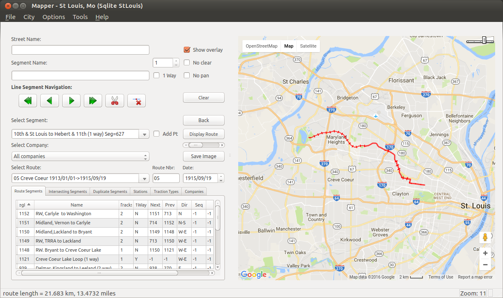
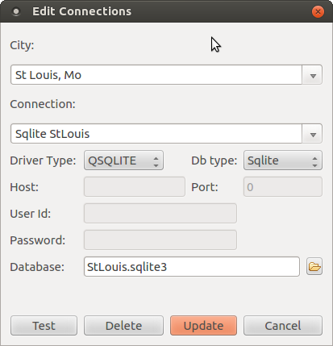
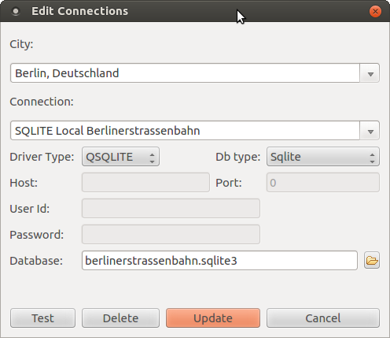

Maintain a database of streetcar routes
|
This program allows the user to maintain a database of streetcar
routes or any other type of transit route. The basic program
provides populated databases for St. Louis, Missouri, Louisville,
Kentucky and Berlin, Germany. The default databases use Sqlite
as the database engine. However, provisions are made to also support
MySql and Sql Server databases. The routes are displayed on a Google
Maps map or alternatively an Open Street Map map. It is also possible
to display a user-defined map. Historical overlays like historical
topgraphic maps can be tiled on a web server. Several overlays have
been installed on my server.
Main Window

Using Mapper
Displaying a route
The "Select Route" combobox contains a list of all the routes for the
current company. If the Company combo box is "All companies" then all
routes in the database will be in the combo box. If a particular
company is selected, then only the routes for that company will be
shown. Routes in the Route combobox are listed by route number, name and effective dates. Select the one you wish to see and then click on "Display Route". There are two checkboxes that affect how a route is displayed. If "Clear" is checked, then the display will be cleared before a new route is displayed, otherwise any previously dislpayed routes will remain. The "No Pan" checkbox, if checked will prevent the map display from being panned if the new route cannot be displayed in the currently visible portion of the map.
Left Clicking on a segment of a route on the map display will cause it to be "selected"; the color will change. The details of the segment will also be displayed in the lefthand panel.
Caution: Changing any of the Segment related data (name, one way, tracks, street) or route data in the Route View will change the database. Do not do this unless you really want to edit or change the data. It is worth noting that SQLite databases are all contained in a single file so making a backup copy is simply a matter of copying the file.
The "Clear" button clears the display of any routes or segments.
The "Save Image allows you to save the currently displayed map along with any routes that are displayed to a file. You will be prompted for a name for the file.
The "Select Segment" combobox provides a list of all the currently defined segments. Selecting one will cause it to be displayed on the map.
Tools Menu
Several options on the Tools menu may be of interest:- Display Route Comments, Display Station Markers, Display Terminal
Markers control whether these attributes are displayed on the map.
- Create KML file will create a Google Maps/Google Earth KML file
for the currently selected route.
- Export database. This option will bring up a dialog which allows selected
database tables to be exported to another
database.
- SQLQuery Dialog. This dialog allows "raw" SQL queries to be made to the database. Don't do any "update" or "insert" type SQL queries if you don't want to modify the database.
Adding a connection
Mapper comes with several populated databases. Initially, St.
Louis is
the default. A second city. Louisville, Kentucky is listed in the City
-> menu. A third database, for Berlin, Germany is included but not
enabled in the menu. Finally, there is a database for Cincinnati, Ohio
which is "under construction". To add Berlin (or any other database
created by
Mapper), select Cities- > Edit Connections... You then will see this
dialog:
Although the following example uses a Sqlite3 database, Mapper also provides for accessing databases on MySql or SQL Server databases. See Using MySql or SQL Server for more information.
To add a Berlin connection.
Type in the City combo Box "Berlin, Deutschland"
then in the Connection combobox type "SQLITE Local Berlinerstrassenbahn" (or any other description that defines the database and connection type). Select "QSQLITE" as the Driver Type and "Sqlite" as the Db type. Finally, click on the browse folder and select the "berlinerstrassenbahn.sqlite3" database file name.

Now, you can click on the "Test" button to test whether the database can be opened. Fianlly, the "Update" button (which will have the text "Add" if the connection is new) must be clicked to add the new connection to the Cities menu.